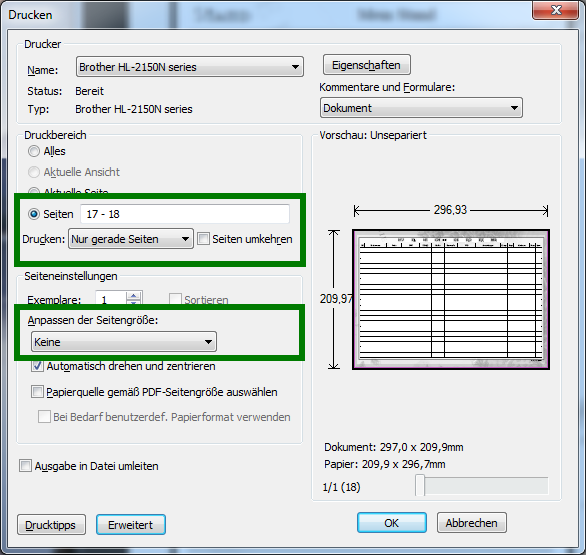

Die Seiten sind im A5 Format definiert und es müssen jeweils zwei Seiten auf ein A4 Blatt gedruckt werden. Der Adobe Acrobat Reader bietet dazu die Option Broschürendruck. Das ausgefüllte Dokument aus der Helden-Software enthält am Ende das Zauberdokument in A4. Da dies nicht Als A5 in die Broschüre gedruckt werden soll müssen die beiden letzten Seiten vom Druck ausgeschlossen werden.
Wer keinen Duplexdrucker besitzt muss zuerst die Vorderseiten/ungeraden ausdrucken. Dann das ausgedruckte Papier erneut in den Drucker einlegen. Die Seiten müssen in der Regel gedreht werden. Dies hängt allerdings vom genutzten Druckermodell ab. Daher muss die korrekte Ausrichtung der Seiten ausprobiert werden. Als letztes die Rückseiten/geraden drucken.
Adobe Acrobat Reader
Im Acrobat Reader können folgende Einstellungen zum Drucken genutzt werden.
Vorderseiten drucken
- Druckbereich
- Seiten: 1-16
- Seiteneinstellungen
- Anpassen der Seitengröße: Broschürendruck
- Seitenauswahl: Nur Vorderseite
- OK zum Drucken der Vorderseiten

Rückseiten drucken
- Druckbereich
- Seiten: 1-16
- Seiteneinstellungen
- Anpassen der Seitengröße: Broschürendruck
- Seitenauswahl: Nur Rückseite
- OK zum Drucken der Rückseiten

Zauberdokument Vorderseiten drucken
- Druckbereich
- Seiten: 17-18
- Nur ungerade Seiten
- Seiteneinstellungen
- Anpassen der Seitengröße: keine
- OK zum Drucken der Vorderseite

Zauberdokument Rückseiten drucken
- Druckbereich
- Seiten: 17-18
- Nur gerade Seiten
- Seiteneinstellungen
- Anpassen der Seitengröße: keine
- OK zum Drucken der Rückseite

Falten und Heften
Die ausgedruckten Seiten so aufeinander legen, dass beim Zusammenfalten folgende Reihenfolge entsteht:
- Heldendokument Deckblatt
- Eigenschaften & Basiswerte, Abenteuerpunkte
- Vorteile, Nachteile & Sonderfertigkeiten
- Talente & Gaben
- Körperliche Talente, Gesellschaftliche Talente
- Natur-Talente, Wissenstalente
- Sprachen & Schriften, Handwerkliche Talente
- Waffen & Kampfwerte
- Schild / Parierwaffe, Rüstung, Ausweichen, Initiative
- Ausrüstung I
- Ausrüstung II
- Vermögen, Verbindungen
- Magie, Magische Vorteile & Nachteile, Magische Sonderfertigkeiten
- Liturgie-/ Ritualkenntnisse
- Notizen I
- Notizen II
Die Blätter können jetzt entlang der Faltkante miteinander verbunden werden. Dazu können die Seiten mit Nadel und Faden zusammen genäht werden.
Zauberdokument
Das Zauberdokument mit allen Zaubern ist zu kompakt um sinnvoll auf A5 verkleinert zu werden. Daher ist ein passendes Zauberdokument im A4 Format enthalten. Dieses kann ebenfalls beidseitig gedruckt und auf A5 gefaltet werden. Wer dieses Blatt nicht lose haben möchte, kann es in die A5 Broschüre einkleben. Dazu von jeder Seite einen Streifen Tesafilm einkleben. Damit die zusätzliche Seite nicht stört, kann diese innen an die letzte Seite geklebt werden.